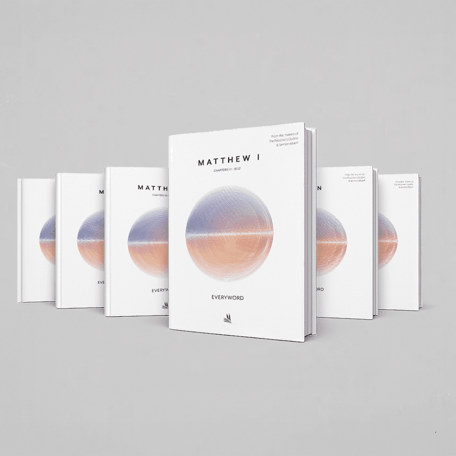
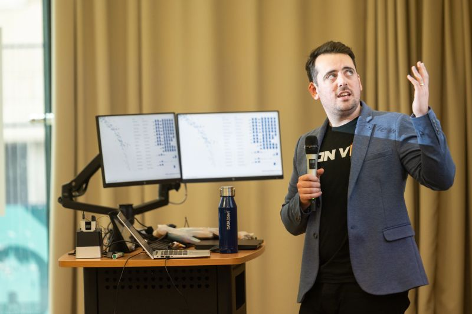

Tableau Visionary & Ambassador
Selected as a 2026 Tableau Visionary - recognised with a small group who share their mastery, teach, and collaborate to make Tableau better for all.
Scroll for more
I'm Chris Westlake. I spend most of my working life in data visualisation — lately with a lot of Tableau — and I had the good fortune to win Iron Viz in 2024. I use this space to share what I'm learning as I go: ideas that made a chart click, mistakes that taught me something, and the occasional longer dive when a topic deserves it.
If you build dashboards every day, or you're simply curious about how to make numbers easier to read and harder to forget, I'm glad you stopped by. I write in the hope that you might find one tip worth trying on your next viz — or a perspective you want to argue with, which is welcome too.
Most posts sit where analysis, design, and storytelling meet. You'll see plenty of Tableau, a fair bit of Iron Viz and competition craft, and always an eye on whether the people looking at your work will actually understand what you meant them to take away.
Selected as a 2026 Tableau Visionary - recognised with a small group who share their mastery, teach, and collaborate to make Tableau better for all.
The flagship Tableau competition rewards clear analysis, tight storytelling, and exceptional design under pressure - against some of the strongest data viz practitioners.
Honoured to see work shortlisted for the Information is Beautiful Awards - alongside some of the strongest data storytelling and visual journalism in the world.
Recent writing from the blog - Tableau, viz craft, and storytelling.
If you're struggling with the final steps of a Tableau data visualization project, this solution is for
you. Whether you have a calculation that isn't working as expected and you can't determine why, or you need
general feedback on your work to confidently present a solution that meets stakeholder requirements and looks
polished, we can help you get there.
Since launching my 1-1 viz help service in 2025, I've taken over 100 bookings and helped dozens of people
get unstuck and elevate their Tableau skills.
Book a 15 minute session with me to talk through your queries and take your use of Tableau to the next level.
A sample of collaborations — from print to the stage to deep Tableau work. If something here resonates, I would love to hear what you are building.

My data art has been used by a global publishing company for a revised edition of their main publication. Everyword, produced by Leadership Ministries Worldwide, has sold over 1 million copies worldwide.

Professionally trained in public speaking, I love any opportunity to share my passion for data visualisation. Whether it is a keynote speech, a shorter lightening talk, or hands on training, I am always keen to pass on my expertise to any group of attentive individuals.
Working directly with clients to improve existing analytics or implement world class solutions is where I excel. In the past I have joined teams for short periods to carry out design enhancements to take analytics to a world class level, and taken on projects from end to end with significant collaboration with clients at all levels of the business.